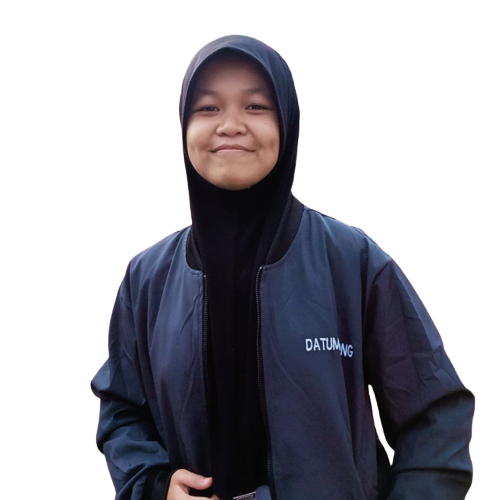

thoughts / words of wisdom
by pilosopong injinir

Zam Campiao
Philosopher
i'm Zam Campiao, and i really love reading and listening to stories. it feels like each book or person is a door to a new world, and i get to open it with my imagination. also, i'm always curious and interested in learning about different things. i mean, i like to explore a lot of different topics in life and everything. it could be anything from science and math to art or history. i find all these things fascinating and love to learn more about them.
here's my short insights about You ! yes You are!
in the busy life of existence, see me as an everyday person exploring the complexities of life. i wear the mask of a "simpleton," not to fake it but as a conscious choice to move through the world with caution and reserve.
why, you ask? well, it's a way of protecting myself, a conscious decision to avoid unnecessary conflicts while quietly observing the ups and downs of human and nature. despite how it may seem, i possess a sharp awareness, a keen sensitivity to the details that make life a masterpiece.
my genuine passion lies in the field of "philosophy of art." i am fascinated by the cleverness of human-made creations, finding beauty in the structure of existence. the harmony of life, with its detailed notes played by the hands of humanity, captivates my soul.
now, imagine a situation where societal judgments rain down upon you, where appreciation is rare, and belief in your abilities is scarce. in contrast, i am the listener, the open-hearted philosopher. despite society's indifference, my ears remain open.
in this story, think about a person confessing to deeds that are hard to understand—a tale tangles with the dark threads of a troubled human soul. instead of condemning, i offer understanding. my hand reaches out not to justify actions but to explore the twisted paths that led to such darkness.
in a world quick to judge, my well of gratitude, acceptance, and patience is a human-made lake, carefully shaped through experiences and reflections. life unfolds before me, a collage of human choices and consequences, and i stand as a witness with a heart unburdened by prejudice.
if you ever need someone to talk to or just want someone to listen without judgment or offer advice, feel free to reach out. wishing you well! stay strong, and God bless!
here's my link: Facebook Account